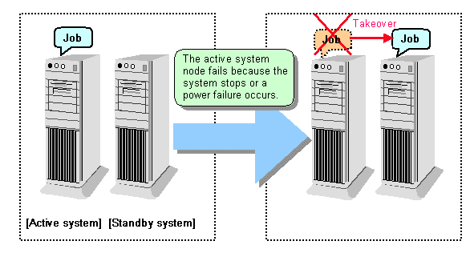
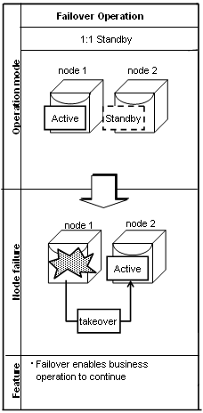

When an abnormality occurs on any of the multiple server devices that make up the cluster system (hereafter referred to as "nodes"), the failover feature transfers a job operating on such a node to another one. Failover can reduce the time for which jobs are stopped when an abnormality occurs, and allows jobs to continue while the node on which the abnormality occurred is recovered.
In FUJITSU Enterprise Postgres, failover can be integrated with PRIMECLUSTER. In such a configuration, the shared disk (GDS) provided by PRIMECLUSTER is used. A server in the cluster system receives the application processing, acting as the active server (active node).
For example, if the active node fails, another server (standby node) inherits the shared disk content and becomes the active node. Using the PRIMECLUSTER feature, the applications to be run on the active node for the database can also be linked with the database and switched. Therefore, jobs can be continued even during recovery of a node where an abnormality has occurred. There is also no need to send the updated content of the database on the active node to the standby node, so the processing performance will be the same as that of a non-cluster system.
Note
When failover operation is integrated with PRIMECLUSTER, the disk is not referenced by the standby node, and therefore failover operation cannot be used for load distribution.
In addition, failover operation cannot be performed concurrently with database multiplexing.
Hereinafter, failover operation integrated with PRIMECLUSTER is referred to as "failover operation".
Figure 1.1 Concept of failover

Failover operation in Symfoware Server supports the standby feature.
When an abnormality occurs on a node, the standby feature starts the instance that is the standby system at the time of the switch, and transfers the job to it.
Operation mode of failover operation
The operation mode supported in failover operation in Symfoware Server is 1:1 standby.
1:1 standby is a mode in which one active system or standby system operates on one node. Because failover allows jobs to continue when an abnormality occurs in the active system, this mode allows highly reliable systems to be constructed.
